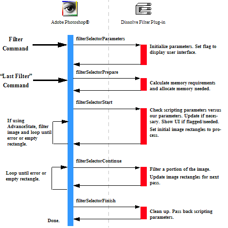

|
|
Adobe Photoshop SDK |
|
Writing Filter Plug-insFilter plug-in modules modify a selected area of an image, and are accessed under the Filter menu.Filter actions range from subtle shifts of hue or brightness, to wild changes that create stunning visual effects For descriptions of the sample Filter plug-ins provided with the SDK, see Filter Samples. When the user invokes a Filter plug-in by selecting its name from the Filter menu, Adobe Photoshop calls it with the sequence of selector values shown in the figure below. The actions the Filter plug-in needs to take for these selectors are discussed in more detail in Filter Module.

Working with Filter ParametersThe host may or may not pass selector filterSelectorParameters to the plug-in, depending on how the user invokes the filter. After a filter has been invoked once, the user may re-apply that same filter with the same parameters by using the Last Filter command in the Filter menu. When Last Filter is selected, the plug-in host does not callfilterSelectorParameters, and the user is not shown any dialogs to enter new parameters. Due to this, the plug-in should always check, validate, and initialize if necessary, the parameters handle in filterSelectorStart before using it.
The parameter block should contain the following information:
You might want to design your filter so that it stores default values or the last used set of values in the filter plug-in’s Mac OS resource fork or a Windows external file. This way, the plug-in can save preference settings that are consistent every time the host application runs. Processing the ImageIf at all possible, you should process the image in pieces to minimize memory requirements. Unless there is a lot of startup/shutdown overhead on each call (for example, communicating with an external DSP), tiling the image with rectangles measuring 64x64 to 128x128 seems to work fairly well.Tiling, as opposed to row-oriented or column-oriented processing, also seems to be more operable for multi-processors. Multi-processors take well to spawning multiple separate threads, each processing a tile, but have a hard time (if at all) with rows or columns. Advance State and Filter ModulesIf the plug-in usesAdvanceStateProc, the core of the filter processing can occur in the handler for filterSelectorStart. Once done processing, set inRect=outRect=maskRect=NULL.
The Filter Modules and ScriptingThe scripting system passes its parameters at every selector call. While it is possible to use the scripting system to store all your parameters, for backwards compatibility, it is recommended you track your parameters with your own parameter block. Once your parameter stucture is validated, you should read your scripting-passed parameters and override your structure with them.The most effective way to do this is:
This way, the scripting system overrides your parameters, but you can use the initial values if the scripting system is unavailable or has parameter errors, and you can use your global parameters to pass between your functions. Scripting at filterSelectorFinishIf your plug-in is scripting-aware and it has changed any initial parameters, it should pass a complete descriptor back to the scripting system in thePIDescriptorParameters structure.
|